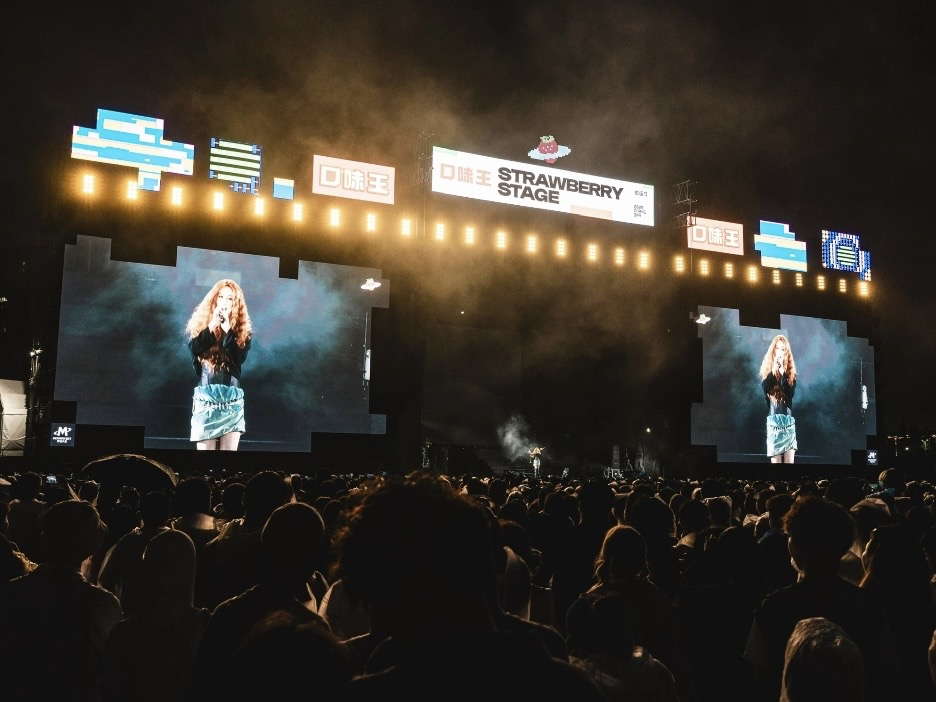

By Cassie
What does a Ukraine LED display importer need to know? Importing LED displays into Ukraine means clearing goods through Odesa or Chornomorsk, confirming the conformity position under the national DSTU standards and technical regulations, and specifying equipment for a continental climate with severe winters. This 2026 guide explains the process.
Ukraine is a large market with demand for LED displays from retail, banking, telecoms, transport, events and the public sector. Reconstruction and modernisation of commercial space continue to drive imports, and China supplies the great majority of professional screens.
A Ukraine LED display importer who confirms the technical regulation position before dispatch and files a complete declaration clears cargo without difficulty. The two factors that most often delay a project are the conformity documentation and the winter specification.
Ukraine clears commercial freight through the Black Sea ports of Odesa, Chornomorsk and Pivdennyi, with road and rail crossings from Poland, Slovakia, Hungary and Romania carrying a growing share of trade. The importer must be registered with the tax authority and hold an EDRPOU code before a declaration can be filed.
Declarations are lodged electronically with the State Customs Service through the national single window. The entry states the classification, the customs value and the origin of each line, and duty and value added tax are assessed on that basis. Ukraine operates a free trade arrangement with the European Union, so origin evidence changes the duty position.
| Step | What Is Required | Who Handles It |
|---|---|---|
| Importer registration | Tax registration and EDRPOU code | Importer |
| Conformity evidence | Declaration or certificate for the model | Supplier, verified by importer |
| Customs declaration | Electronic entry through the single window | Importer or broker |
| Duty and VAT | Assessed on the customs value | Importer |
| Origin evidence | Preference claim where an agreement applies | Importer or broker |
| Inland transport | Delivery to site or warehouse | Importer or broker |
Confirm the consignee on the transport document against the importer of record, and check that the invoice states the exact model and quantity. Discrepancies between the invoice and the declaration are a common cause of delay at Odesa and at the western land crossings.
Ukraine develops its national standards as DSTU, administered by the national standardisation body UkrNDNC. Mandatory state certification under the older UkrSEPRO system was abolished, and conformity is now demonstrated through technical regulations, declarations of conformity and, where a regulation requires it, certification by an accredited body.
Ukraine is aligning its technical regulations with the European framework as part of its accession path, and CE marking and European test reports are widely accepted as supporting evidence. Declarations are registered in the national database, and market surveillance is carried out by the state market surveillance service.
| Requirement | What It Covers | Evidence to Hold |
|---|---|---|
| Declaration of conformity | Product conformity for Ukraine | Registered declaration for the model |
| Safety test report | Electrical safety | Report naming the offered model |
| EMC test report | Electromagnetic compatibility | Report naming the offered model |
| CE technical file | European conformity evidence | Test reports and declarations |
| Technical file | Drawings and specifications | Complete file held by the importer |
| Labelling | Product information for the market | Label artwork in Ukrainian |
Keep the technical file after the goods are sold, because the authorities may request it during the life of the product and the same file supports a warranty claim. A file assembled at the order stage costs far less than one reconstructed later.
Ukraine applies a national tariff to imported goods, with lower or zero rates for many categories and a value added tax of twenty percent on top. Duty is calculated on the customs value, normally the transaction value adjusted to the agreed Incoterm, and the tax applies to the duty-paid value.
Where origin evidence supports a preference under a trade agreement, the duty rate can fall sharply. Confirm the position for the specific commodity code rather than assuming a general rule applies.
| Cost Element | Basis | Notes |
|---|---|---|
| Customs duty | Commodity code and value | Lower or zero where a preference applies |
| Value added tax | Value plus duty | Standard rate of twenty percent |
| Customs formalities fee | Per declaration | Small charge added to the cost base |
| Broker fee | Per declaration | Varies by broker and volume |
| Port and storage | Per day after the free period | Mounts if documents are late |
| Inland transport | By distance and route | Confirm delivery to site |
Value added tax is recoverable for a registered business, so the effect is on cash flow rather than on final cost. Duty and formalities charges are not recoverable and belong in the cost calculation from the beginning.
Importers work through a licensed customs broker or a customs representative who files the declaration and handles the border and port formalities. Choose a broker who clears electronic goods rather than general cargo, and confirm that the broker holds the licences required for the ports and crossings you use.
Give the broker the complete document pack before dispatch. A shipment that reaches Odesa or a land crossing with incomplete paperwork is held while the gap is filled, and storage charges accumulate for every day the container remains in the terminal.
Discuss the routing before booking. With Black Sea shipping disrupted at times, many importers route cargo overland through Poland or Romania, and the broker should be able to clear the goods at whichever crossing is used.
Ukraine has a temperate continental climate with cold winters, hot summers and significant snowfall in the north and east. Screens installed outdoors must survive sub-zero temperatures, snow load and freeze-thaw cycling, while indoor screens in heated buildings face a much gentler environment.
For Ukrainian sites, low winter temperatures make cabinet construction and sealing the deciding factors — the X Series uses standard 500×500mm cabinets with front/rear service, and the COB EF outdoor series is sealed against snow-melt and moisture ingress.
| Condition | Risk | Specification Response |
|---|---|---|
| Winter temperatures well below zero | Brittle materials and failed start-up | Components rated for low temperature operation |
| Snow and ice load | Structural stress on cabinets and mounts | Load calculated for the site snow zone |
| Freeze-thaw cycling | Water ingress and seal failure | High ingress rating and sealed cable entries |
| Summer heat | Thermal stress on power supplies | Higher temperature rating and derating plan |
| Wide annual temperature range | Differential expansion of joints | Design tolerance verified for the range |
| Unstable grid power | Damage to driver electronics | Wide-input supplies and surge protection |
Where the site relies on a generator or an unstable grid, specify power supplies with a wide input range and add surge protection. Voltage variation damages driver electronics faster than cold in many installations.
LED display cargo reaches Ukraine by sea through the Black Sea ports or overland by road and rail from Poland, Slovakia, Hungary and Romania. Air freight is reserved for urgent spare parts and sample units.
| Stage | Typical Duration | What Can Delay It |
|---|---|---|
| Production | 15 to 25 working days | Component availability and queue |
| Inland to port and export | 3 to 6 days | Booking availability |
| Conformity and declaration | 3 to 8 days | Document queries and registration |
| Freight | Varies by routing | Sea schedule or border congestion |
| Import clearance | 3 to 8 days | Documentation queries and inspection |
| Total | Approximately 6 to 10 weeks | Add a substantial buffer |
Build a buffer of at least three weeks beyond the quoted transit time. Where freight is routed overland, border queues can vary sharply, and a screen tied to an opening date has no room to absorb them.
Ask every candidate the same questions and record the answers. For Ukrainian projects the conformity documentation, the cold-weather rating and the power quality options matter as much as the price.
| Question | What a Strong Answer Looks Like | Warning Sign |
|---|---|---|
| Conformity support | Test reports and declarations for the model | Evidence promised after dispatch |
| Cold-weather rating | Stated minimum operating temperature | Not specified |
| Power supply | Named brand and wide input range | Brand only, no part number |
| Structural rating | Snow and wind load stated for the site | Not addressed |
| Packaging standard | Crating method described for the route | Not addressed |
| Spare parts availability | Stated period in writing | No commitment given |
Confirm the components in writing and require written approval for any substitution. A supplier facing a component shortage may change a part quietly, and the change only appears when the screens arrive.
Each mistake is inexpensive to avoid during planning and costly after the goods land. A Ukraine LED display importer who confirms the compliance position, rates the equipment for winter and specifies for the site avoids most of them.
Asia Vision Technology manufactures LED displays in Shenzhen and supplies importers, distributors and contractors across Eastern Europe and the Black Sea region. The factory supplies the test documentation Ukrainian importers need, builds cabinets for the voltage and climate of the destination, and holds spare parts for the stated warranty period.
For Ukrainian projects the company supplies rental cabinets for events, fine pitch screens for retail and corporate work, and outdoor displays rated for low temperature and snow load. OEM and ODM production is available for distributors building their own range.
